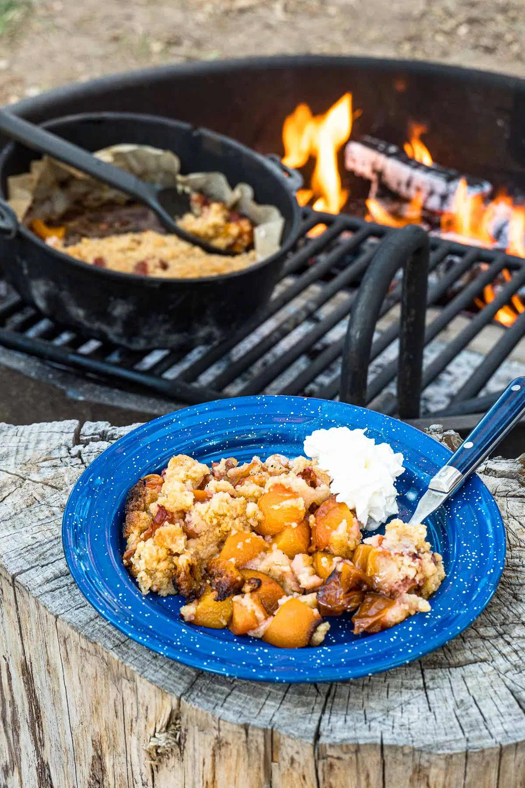

Peach Cobbler

Description
Prepare to indulge in a heavenly dessert that captures the essence of cozy
campfire nights and the sweet essence of summer. Our
campfire peach cobbler is a mouthwatering treat that combines the
natural juiciness of ripe peaches with a buttery, cinnamon-infused crumble
topping. As the flames dance and the aroma wafts through the air, you'll
be transported to a place where gooey, caramelized peaches mingle with the
subtle smokiness of the fire. Whether you're camping in the great outdoors
or simply craving a taste of nostalgia, this campfire peach cobbler recipe
is sure to ignite your taste buds and leave you craving more. Gather
'round the fire, grab a spoon, and prepare for a slice of dessert heaven
under the starry sky.
Ingredients
- Filling
- 3-4 ripe peaches
- 1 tablespoon sugar
- Topping
- 1/4 cup butter, melted
- 1/2 cup flour
- 1/4 cup sugar
- 1/2 teaspoon baking powder
- 1/4 teaspoon salt
- whipped cream, optional
Steps
-
Start your campfire so you'll have embers to work with, or light your
charcoal briquettes. Line the Dutch oven with a round of parchment
paper.
-
Place the butter in an enamel or metal bowl and set it near the campfire
to melt.
-
Cut the peaches into bite-sized pieces. Place them in the lined Dutch
oven and sprinkle with 2 tablespoons of sugar.
-
Mix the flour, remaining sugar, baking powder, and salt in a bowl.
-
Once the butter is melted, pour it in to the dry ingredients. Using a
fork, mix thoroughly until you reach a soft, crumbly consistency.
-
Spread the crumbly topping over the peaches in the Dutch oven. Cover
with the lid.
-
Transfer the Dutch oven to the fire ring. Place 7 coals under the oven
in a circle, and place 14 coals on the lid to create ~350F heat. Bake
20-30 minutes, until the filling is bubbling and the topping is golden.
You may need to add coals if they begin to cool down.
- Remove from the campfire and serve with whipped cream!
Back to Homepage